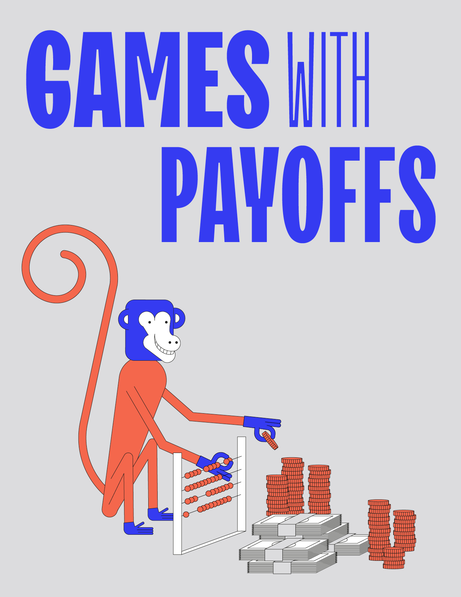

Games with Payoffs

\[\newcommand{\FC}{\mathrm{FC}\xspace}
\newcommand{\Cycles}{\mathrm{Cycles}\xspace}
\newcommand{\Mean}{\mathrm{Mean}\xspace}
\newcommand{\FirstCycle}{\mathrm{FirstCycle}\xspace}
\newcommand{\SuffixAllCycles}{\mathrm{SuffixAllCycles}\xspace}
\newcommand{\FirstCycleReset}{\mathrm{FirstCycleReset}\xspace}
\newcommand{\siblank}{\mathtt{-}}
\newcommand{\Lift}{\textrm{Lift}}
\newcommand{\Rbar}{\overline\R}
\newcommand{\downward}[1]{\mathop{\downarrow_{#1}}}
\newcommand{\gval}{\mathrm{gr}\text{-}\val}
\newcommand{\bigO}{O}\newcommand{\Eve}{\textrm{Eve}}
\newcommand{\Adam}{\textrm{Adam}}
\newcommand{\set}[1]{\left\{ #1 \right\}}
\newcommand{\N}{\mathbb{N}}
\newcommand{\Z}{\mathbb{Z}}
\newcommand{\Zinfty}{\Z \cup \set{\pm \infty}}
\newcommand{\R}{\mathbb{R}}
\newcommand{\Rinfty}{\R \cup \set{\pm \infty}}
\newcommand{\Q}{\mathbb{Q}}
\newcommand{\Qinfty}{\Q \cup \set{\pm \infty}}
\newcommand{\argmax}{\textrm{argmax}}
\newcommand{\argmin}{\textrm{argmin}}
\newcommand{\Op}{\mathbb{O}}
\newcommand{\Prob}{\mathbb{P}} \newcommand{\dist}{\mathcal{D}} \newcommand{\Dist}{\dist} \newcommand{\supp}{\textrm{supp}}
\newcommand{\game}{\mathcal{G}} \renewcommand{\Game}{\game} \newcommand{\arena}{\mathcal{A}} \newcommand{\Arena}{\arena}
\newcommand{\col}{\textsf{col}} \newcommand{\Col}{\col}
\newcommand{\mEve}{\mathrm{Eve}}
\newcommand{\mAdam}{\mathrm{Adam}}
\newcommand{\mRandom}{\mathrm{Random}}
\newcommand{\vertices}{V} \newcommand{\VE}{V_\mEve} \newcommand{\VA}{V_\mAdam} \newcommand{\VR}{V_\mRandom}
\newcommand{\ing}{\textrm{In}}
\newcommand{\Ing}{\ing}
\newcommand{\out}{\textrm{Out}}
\newcommand{\Out}{\out}
\newcommand{\dest}{\Delta}
\newcommand{\WE}{W_\mEve} \newcommand{\WA}{W_\mAdam}
\newcommand{\Paths}{\textrm{Paths}} \newcommand{\play}{\pi} \newcommand{\first}{\textrm{first}} \newcommand{\last}{\textrm{last}}
\newcommand{\mem}{\mathcal{M}} \newcommand{\Mem}{\mem}
\newcommand{\Pre}{\textrm{Pre}} \newcommand{\PreE}{\textrm{Pre}_\mEve} \newcommand{\PreA}{\textrm{Pre}_\mAdam} \newcommand{\Attr}{\textrm{Attr}} \newcommand{\AttrE}{\textrm{Attr}_\mEve} \newcommand{\AttrA}{\textrm{Attr}_\mAdam} \newcommand{\rank}{\textrm{rank}}
\renewcommand{\Win}{\textrm{Win}}
\renewcommand{\Lose}{\textrm{Lose}}
\newcommand{\Value}{\textrm{val}}
\newcommand{\ValueE}{\textrm{val}_\mEve}
\newcommand{\ValueA}{\textrm{val}_\mAdam}
\newcommand{\val}{\Value}
\newcommand{\Automaton}{\mathbf{A}}
\newcommand{\Safe}{\mathtt{Safe}}
\newcommand{\Reach}{\mathtt{Reach}}
\newcommand{\Buchi}{\mathtt{Buchi}}
\newcommand{\CoBuchi}{\mathtt{CoBuchi}}
\newcommand{\Parity}{\mathtt{Parity}}
\newcommand{\Muller}{\mathtt{Muller}}
\newcommand{\Rabin}{\mathtt{Rabin}}
\newcommand{\Streett}{\mathtt{Streett}}
\newcommand{\MeanPayoff}{\mathtt{MeanPayoff}}
\newcommand{\DiscountedPayoff}{\mathtt{DiscountedPayoff}}
\newcommand{\Energy}{\mathtt{Energy}}
\newcommand{\TotalPayoff}{\mathtt{TotalPayoff}}
\newcommand{\ShortestPath}{\mathtt{ShortestPath}}
\newcommand{\Sup}{\mathtt{Sup}}
\newcommand{\Inf}{\mathtt{Inf}}
\newcommand{\LimSup}{\mathtt{LimSup}}
\newcommand{\LimInf}{\mathtt{LimInf}}
\newcommand{\NL}{\textrm{NL}}
\newcommand{\PTIME}{\textrm{PTIME}}
\newcommand{\NP}{\textrm{NP}}
\newcommand{\coNP}{\textrm{coNP}}
\newcommand{\PSPACE}{\textrm{PSPACE}}\]
Written by Benjamin Monmege
This chapter considers quantitative objectives defined using payoffs.
Adding quantities can serve two goals:
the first is for refining qualitative objectives by quantifying how well, how fast, or at what cost a qualitative objective is satisfied,
and the second is to define richer specifications and preferences over outcomes.
We start in~Section Refining qualitative objectives with quantities by studying extensions of the classical qualitative objectives. Among two strategies in a reachability game that guarantee to reach a target in ten steps or in a billion steps, we would certainly prefer the first one from a pragmatic point of view.
We study mean payoff games in~Section Mean payoff games.
We present two algorithms for solving them, the first based on strategy improvement and the second on a value iteration for the related class of energy games.
Along the way we show that parity games reduce to mean payoff games.
We study discounted payoff games in~Section Discounted payoff games.
We construct a strategy improvement algorithm for computing the value function.
We also show that mean payoff games reduce to discounted payoff games, so the previous algorithm yields an algorithm for computing the value function of a mean payoff game.
We study shortest path games in~Section Shortest path games.
They extend reachability games by requiring that Eve reaches her target with minimal cost,
which if the weights are all equal means as soon as possible.
We study total payoff games in~Section Total payoff games.

{kind=link}